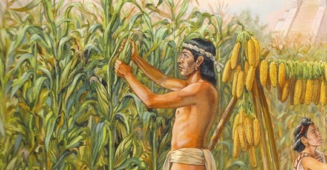
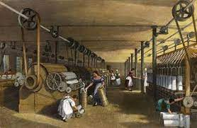

Apresentando uma breve historia do desenvolvimento tecnologico humano
A história do desenvolvimento tecnológico humano remonta a milhares de anos, desde a invenção das primeiras ferramentas de pedra, cerca de 2,6 milhões de anos atrás e a descoberta de fogo, cerca de 800 mil anos depois por nossos ancestrais hominídeos. A invenção de ferramentas de pedra e outros materiais permitiu que os hominídeos expandissem seus horizontes e sobrevivessem em ambientes mais variados e hostis.
Ao longo dos milenios seguintes, os humanos desenvolveram uma ampla variedade de tecnologias para atender às suas necessidades, como agricultura, transporte, comunicação, medicina, energia e muito mais. Entre as invenções mais significativas estão a roda, o arado, a imprensa, a máquina a vapor, a eletricidade, o telefone, o rádio, o computador e a internet.


O desenvolvimento tecnológico acelerou-se rapidamente a partir da Revolução Industrial, no final do século XVIII e início do século XIX, quando as máquinas e os sistemas de produção em massa transformaram a economia e a sociedade. Desde então, as tecnologias continuaram a evoluir em ritmo acelerado, com avanços significativos em áreas como a robótica, a inteligência artificial, a biotecnologia, a nanotecnologia e a energia limpa.

O desenvolvimento tecnológico humano tem tido um enorme impacto na história do mundo, impulsionando a economia global, melhorando as condições de vida, reduzindo a mortalidade infantil e prolongando a expectativa de vida. No entanto, também levantou preocupações sobre o impacto ambiental, a segurança cibernética, a privacidade e a desigualdade econômica e social.